{{ToolsSidebar}}
The request details pane appears when you click on a network request in the request list. This pane provides more detailed information about the request.
Clicking on a row displays a new pane in the right-hand side of the network monitor, which provides more detailed information about the request.
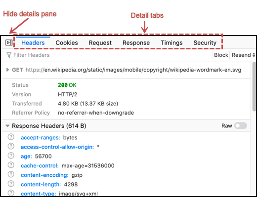
The screenshots and descriptions in this section reflect Firefox 78. Earlier versions appeared similarly, but might not include some functionality.
The tabs at the top of this pane enable you to switch between the following pages:
Clicking the icon at the right-hand end of the toolbar closes the details pane and returns you to the list view.
The Headers tab has a toolbar, followed by three main sections.
This includes:
Each section has a disclosure triangle to expand the section to show more information.
Using the Headers toolbar, you can:
The following information is shown only when the section is expanded:
The following information is shown in both the collapsed and the expanded states:
Referer header, should be included with requests. (See Referrer-Policy for a description of possible values)The response headers section shows details about the response. For each line in the response headers section, a question mark links to the documentation for that response header, if one is available.
A Raw toggle button in the section heading controls whether the headers are shown with formatting, or as plain, unformatted text.
Note that the keys in the response header are all in lowercase, while the request headers keys are not. HTTP/2 requires that all headers be lowercase; response headers are shown as they are received from the server. (There may be some exceptions, such as X-Firefox-Spdy, which is added by Firefox.)
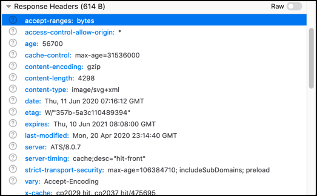
You can copy some or all of the response header in JSON format by using the context menu:
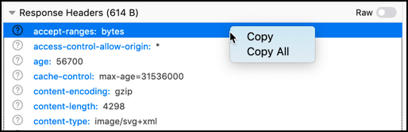If you select Copy, a single key word, value pair is copied. If you select Copy All, the entire header is copied in JSON format, giving you something like this (after running the results through a JSON validator):
{
"Response headers (1.113 KB)": {
"headers": [
{
"name": "accept-ranges",
"value": "bytes"
},
{
"name": "age",
"value": "0"
},
{
"name": "backend-timing",
"value": "D=74716 t=1560258099074460"
},
{
"name": "cache-control",
"value": "private, must-revalidate, max-age=0"
},
{
"name": "content-disposition",
"value": "inline; filename=api-result.js"
},
{
"name": "content-encoding",
"value": "gzip"
},
{
"name": "content-length",
"value": "673"
},
{
"name": "content-type",
"value": "text/javascript; charset=utf-8"
},
{
"name": "date",
"value": "Tue, 11 Jun 2019 13:01:39 GMT"
},
{
"name": "mediawiki-login-suppressed",
"value": "true"
},
{
"name": "p3p",
"value": "CP=\"This is not a P3P policy! See https://en.wikipedia.org/wiki/Special:CentralAutoLogin/P3P for more info.\""
},
{
"name": "server",
"value": "mw1316.eqiad.wmnet"
},
{
"name": "server-timing",
"value": "cache;desc=\"pass\""
},
{
"name": "strict-transport-security",
"value": "max-age=106384710; includeSubDomains; preload"
},
{
"name": "vary",
"value": "Accept-Encoding,Treat-as-Untrusted,X-Forwarded-Proto,Cookie,Authorization,X-Seven"
},
{
"name": "via",
"value": "1.1 varnish (Varnish/5.1), 1.1 varnish (Varnish/5.1)"
},
{
"name": "x-analytics",
"value": "ns=-1;special=Badtitle;WMF-Last-Access=11-Jun-2019;WMF-Last-Access-Global=11-Jun-2019;https=1"
},
{
"name": "x-cache",
"value": "cp1075 pass, cp1075 pass"
},
{
"name": "x-cache-status",
"value": "pass"
},
{
"name": "x-client-ip",
"value": "204.210.158.136"
},
{
"name": "x-content-type-options",
"value": "nosniff"
},
{
"name": "X-Firefox-Spdy",
"value": "h2"
},
{
"name": "x-frame-options",
"value": "SAMEORIGIN"
},
{
"name": "x-powered-by",
"value": "HHVM/3.18.6-dev"
},
{
"name": "x-search-id",
"value": "esvan0r5bnnwscyk2wq09i1im"
},
{
"name": "x-varnish",
"value": "766019457, 417549316"
}
]
},
"Request headers (665 B)": {
"headers": [
{
"name": "Accept",
"value": "*/*"
},
{
"name": "Accept-Encoding",
"value": "gzip, deflate, br"
},
{
"name": "Accept-Language",
"value": "en-US,en;q=0.5"
},
{
"name": "Connection",
"value": "keep-alive"
},
{
"name": "Cookie",
"value": "WMF-Last-Access=11-Jun-2019; WMF-Last-Access-Global=11-Jun-2019; mwPhp7Seed=5c9; GeoIP=US:NY:Port_Jervis:41.38:-74.67:v4"
},
{
"name": "DNT",
"value": "1"
},
{
"name": "Host",
"value": "en.wikipedia.org"
},
{
"name": "Referer",
"value": "https://www.wikipedia.org/"
},
{
"name": "TE",
"value": "Trailers"
},
{
"name": "User-Agent",
"value": "Mozilla/5.0 (Windows NT 10.0; Win64; x64; rv:68.0) Gecko/20100101 Firefox/68.0"
}
]
}
}
The Request headers section shows details about the request headers. For each line in the request headers section, a question mark links to the documentation for that request header, if one is available.
A Raw toggle button in the section heading controls whether the headers are shown with formatting, or as plain, unformatted text.
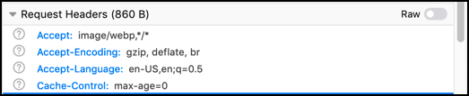
This tab lists full details of any cookies sent with the request or response:
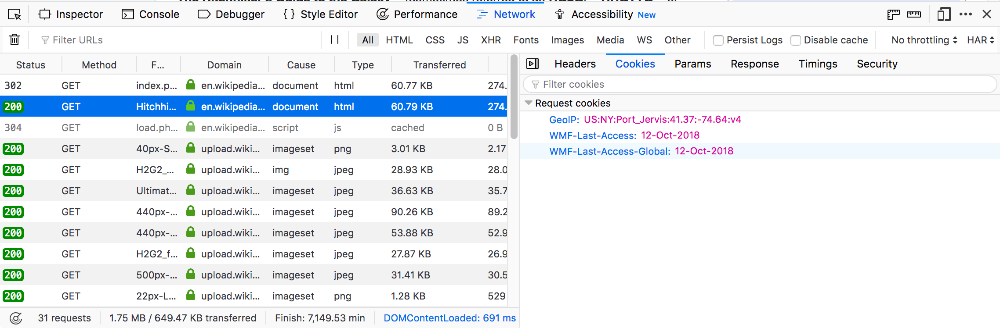
As with headers, you can filter the list of cookies displayed. The full list of cookie attributes is shown—see the following screenshot showing Response cookies with further attributes shown.
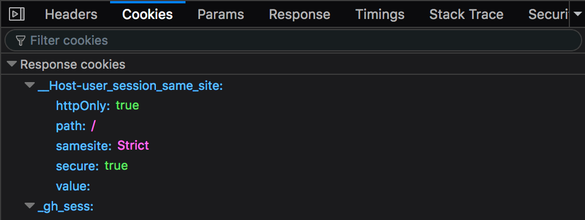
The samesite attribute has been shown since Firefox 62 ({{bug("1452715")}}).
This tab displays the GET parameters and POST data of a request:
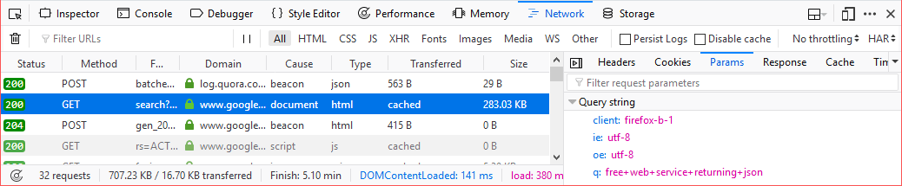
The complete content of the response. If the response is HTML, JS, or CSS, it will be shown as text:
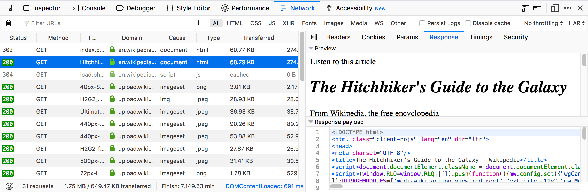
If the response is JSON, it will be shown as an inspectable object:
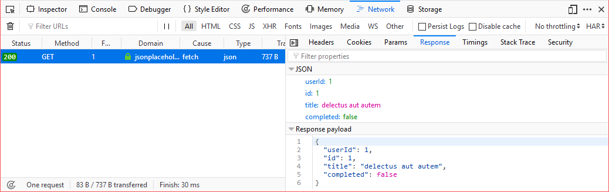
If the response is an image, the tab displays a preview:
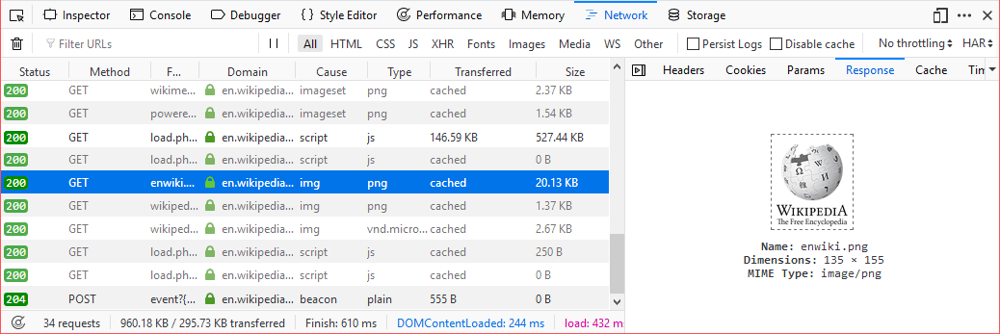
For network responses that are initiated by a WebSocket connection, the details pane shows any associated messages. For more information, see Inspecting web sockets.
If the response is cached (i.e. a 304), the Cache tab displays details about that cached resource.
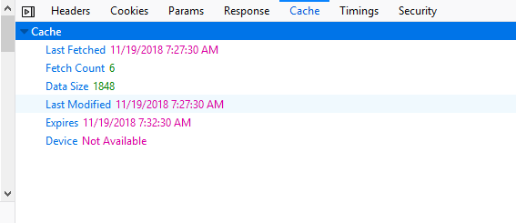
These details include:
If the response is HTML, a preview of the rendered HTML appears inside the Response tab, above the response payload.
The Timings tab provides information about how long each stage of a network request took, with a more detailed, annotated, view of the timeline bar, so it is easy to locate performance bottlenecks.
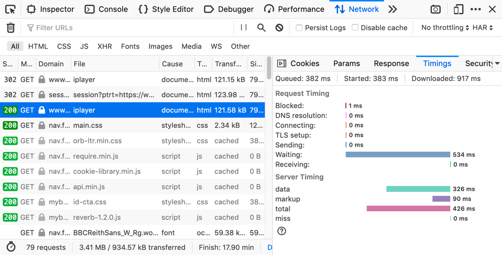
This tab can include the following sections.
New in Firefox 72, we now show the following timings at the top of the Timings tab, making dependency analysis a lot easier:
Note: Future versions will also show this information when entries in the network monitor timeline graph are moused over (see {{bug(1580493)}}).
The Request Timing section breaks a network request down into the following subset of the stages defined in the HTTP Archive specification:
| Name | Description |
|---|---|
| Blocked |
Time spent in a queue waiting for a network connection. The browser imposes a limit on the number of simultaneous connections that can be made to a single server. In Firefox this defaults to 6, but can be changed using the |
| DNS resolution | Time taken to resolve a host name. |
| Connecting | Time taken to create a TCP connection. |
| Sending | Time taken to send the HTTP request to the server. |
| Waiting | Waiting for a response from the server. |
| Receiving | Time taken to read the entire response from the server (or cache). |
New in Firefox 71, the Server Timing section lists any information provided in the {{httpheader("Server-Timing")}} header — this is used to surface any backend server timing metrics you've recorded (e.g. database read/write, CPU time, file system access, etc.).
The header takes a series of descriptions and durations, which can be anything you like. In the above screenshot for example, the highlighted request's Server-Timing header contains 4 items — data, markup, total, and miss.
If the site is being served over HTTPS, you get an extra tab labeled "Security". This contains details about the secure connection used including the protocol, the cipher suite, and certificate details:
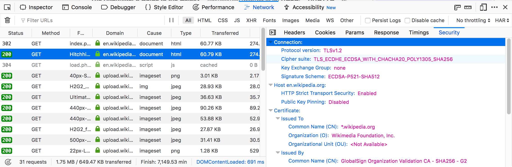
The Security tab shows a warning for security weaknesses. Currently it warns you about two weaknesses:
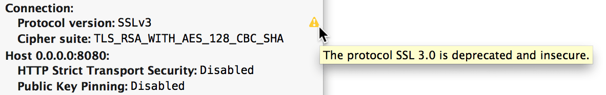
Stack traces are shown in the Stack Trace tab, for responses that have a stack trace of course.
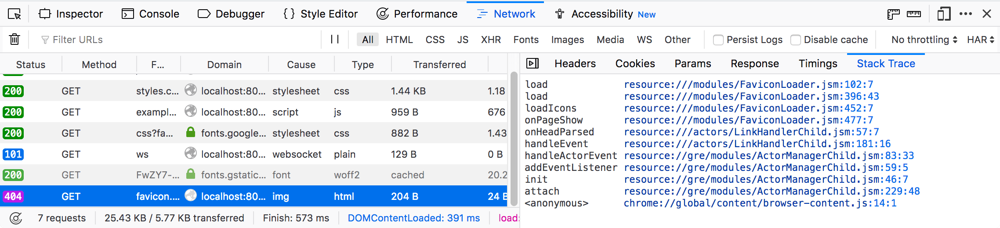
The following articles cover different aspects of using the network monitor: